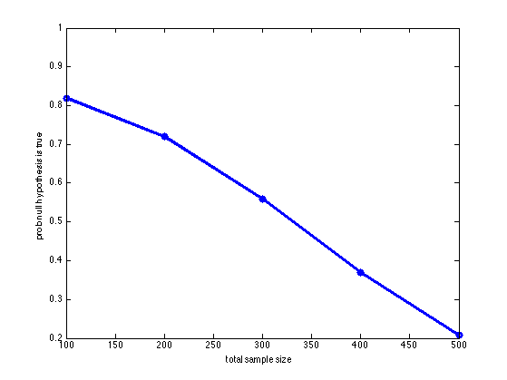

We compare the posterior on 2 graphs, X1-X2 and X1 indep of X2
Here X1 and X2 are discrete We use tabular CPDs with uniform priors
% This file is from pmtk3.googlecode.com % simulate handedness data, X1=gender, X2=hand % suppose we have N1 males (1), N2 females (2) % of which y1 males are LH (1) and y2 females are LH %y1 = 9; n1 = 52; y2 = 4; n2 = 48; %y1 = 1; n1=100; y2=20; n2=100; % Data from http://en.wikipedia.org/wiki/Contingency_table % Compare to unpairedTestHandednessDemo % Let us see how changing the sample size changes our beliefs sfs = [1 2 3 4 5]; for trial=1:numel(sfs) sf = sfs(trial); y1 = 9*sf; n1 = 52*sf; y2 = 4*sf; n2 = 48*sf; N(trial) = n1+n2; male = 1; female = 2; LH = 1; RH = 2; X1 = [male*ones(1,n1) female*ones(1,n2)]; X2 = [LH*ones(1,y1) RH*ones(1,n1-y1) LH*ones(1,y2) RH*ones(1,n2-y2)]; % let us check the order of the data does not matter %X2 = [ RH*ones(1,n1-y1) LH*ones(1,y1) LH*ones(1,y2) RH*ones(1,n2-y2)]; X = [X1(:) X2(:)]; % sanity check mleMale = sum(X2(X1==male)==LH)/n1 mleFemale = sum(X2(X1==female)==LH)/n2 alpha = 1; Gs = { [0 1; 0 0], [0 0; 0 0] }; for i=1:length(Gs) G = Gs{i}; L(i) = discreteDAGlogEv(X, G, alpha); p(i) = exp(L(i)); end post = exp(normalizeLogspace(L)); pnull(trial) = post(2); end figure; plot(N, pnull, 'o-', 'linewidth', 3); xlabel('total sample size') ylabel('prob null hypothesis is true') printPmtkFigure('graphicalIndepTest')
mleMale = 0.173076923076923 mleFemale = 0.083333333333333 mleMale = 0.173076923076923 mleFemale = 0.083333333333333 mleMale = 0.173076923076923 mleFemale = 0.083333333333333 mleMale = 0.173076923076923 mleFemale = 0.083333333333333 mleMale = 0.173076923076923 mleFemale = 0.083333333333333